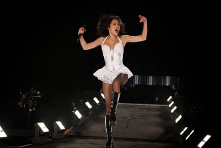
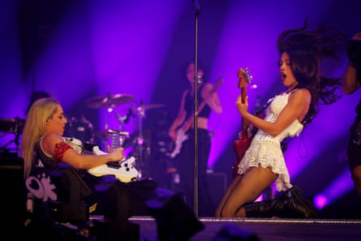

O livia Rodrigo’s first Glastonbury appearance in 2022 was the stuff of minor legend. Aged 19, already the author of an 18m selling debut album, but something of an unknown quantity in festival terms, she turned out to be rather more feral and off-message than you might have expected a former Disney Channel star turned teen-popper to be. At one juncture, she named each individual judge responsible for overturning Roe v Wade that weekend, shouting “We hate you! We hate you!” then performing Lily Allen’s Fuck You in duet with its author.
Three years on, with another huge-selling album in the bag, and lifted to the status of headliner, nothing quite so likely to stir up controversy on Fox News happens. But the singer is still capable of springing surprises, when she announces the arrival of a special guest – “perhaps the best songwriter to come out of England … a Glastonbury legend and a personal hero of mine”, you somehow automatically expect Ed Sheeran to appear from the wings, acoustic guitar in hand. But this does Rodrigo something of a disservice. It turns out to be Robert Smith, who duets with her on versions of Friday I’m In Love and Just Like Heaven.
Springing surprises … Olivia Rodrigo.Photograph: Alicia Canter/The Guardian
Securing the presence of the Cure’s frontman is, as young people are wont to say, a massive flex. For one thing, as the sharp WTF? intake of breath that greets his appearance indicates, it’s the one “secret” appearance of the entire festival that genuinely seems to have been kept a secret. It’s also a smart way of drawing in a crowd substantially more varied than you suspect ordinarily attends Rodrigo’s gigs: she made her name with songs that sounded like teenage diary entries set to music that balanced piano balladry with zippy pop-punk.
But in truth, Rodrigo doesn’t really need an alt-rock legend to win over the crowd – it’s already happened before Smith arrives. Clad in a pair of 18-hole Doc Martens, she’s a really engaging performer, cravenly playing up to the crowd by hymning Britain’s pubs – “where no one judges you for having a pint at lunchtime” – and M&S confectionery legend Colin the Caterpillar, changing into a pair of union jack hot pants midway through the set, and demanding her fans “think about something or someone that really fucking pisses you off” and scream mid-song.
Surprisingly gnarly … Olivia Rodrigo and band.Photograph: Alicia Canter/The Guardian
Theoretically her sound exists at two distinct polarities that shouldn’t really mesh together – the soft rock adjacent ballads and the pop-punk, the latter sounding noticeably heftier live than on record, the guitar solos surprisingly gnarly. But they’re united both by the fact that the songs are uniformly well-written – Get Him Back! has a timelessly snotty chorus that glam titans Chinn and Chapman would have been proud to give Suzi Quatro; All-American Bitch is sharp and funny; Vampire’s swell from downcast introspection to bile-spitting theatricality is brilliantly done – and that their tone is invariably lovelorn and accusatory. If the noisier tracks are more immediate live, giving her backing band more chance to demonstrate their potency, the set is perfectly balanced. Even if you don’t count yourself among the Rodrigo stans lined up against the front barrier – the big screens show them both passionately screaming along and looking faintly baffled when Robert Smith’s moment in the spotlight arrives – it never lags.
It also feels like more of an event than any other big set this year: as it ends with fireworks, you get the distinct feeling that, at 22, a teen pop star might have unexpectedly, but deservedly, stolen the show.